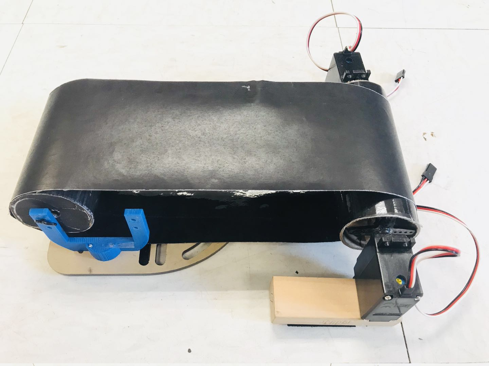
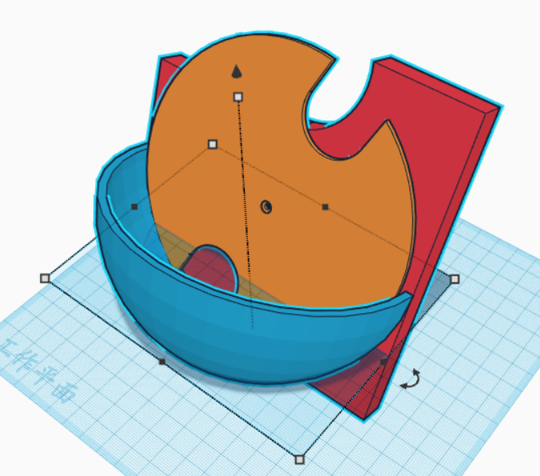
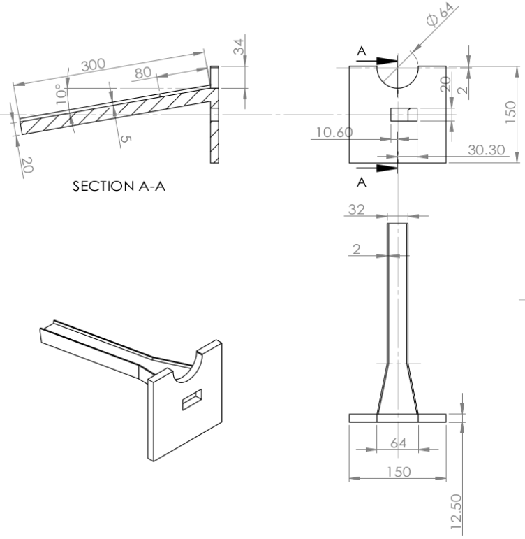
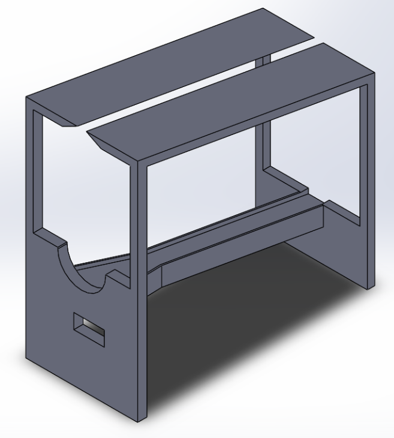
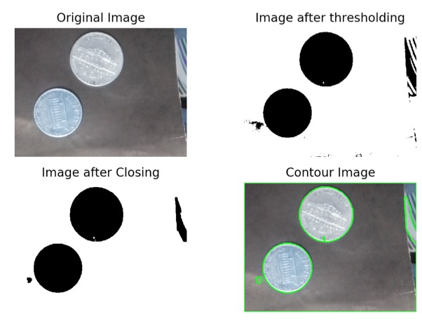
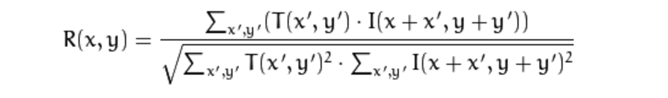
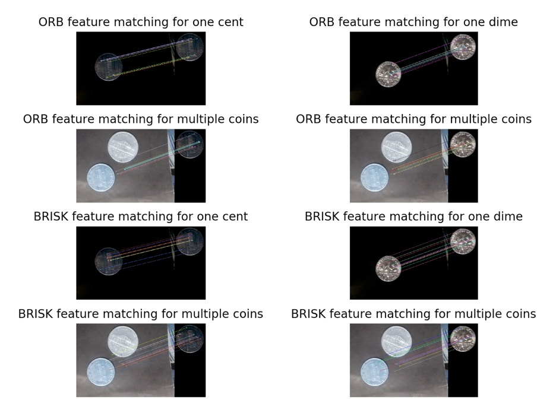
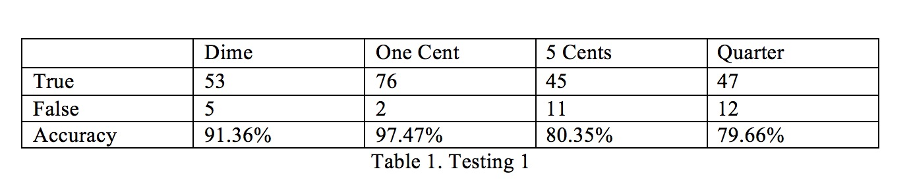
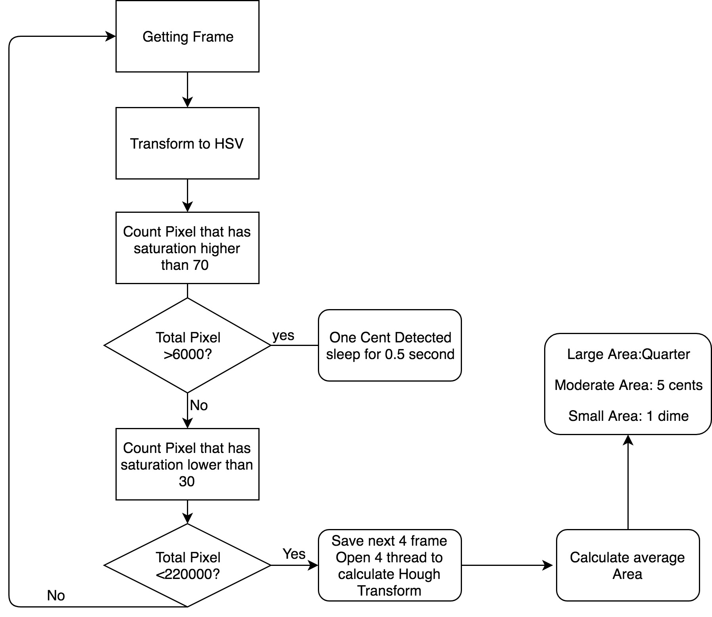
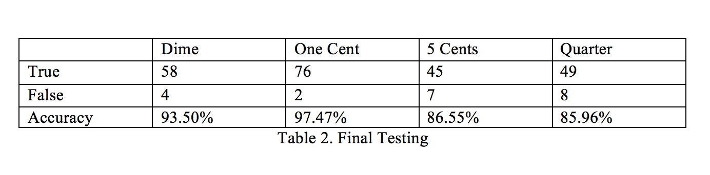

Designed By:Guangwei Chen(gc535), Shuheng Lin(sl2954)
Introduction
The initial motivation of this project comes from the daily issue that encountered by many international students during their grocery shopping. There are many different kinds of coin used in the US.: quarter dollar, dime, 5 cents, 1 cent, and international students often have a hard time when they are trying to use some of the change they got after grocery shopping. They can barely distinguish between 5 cent, 1 cent and 1 dim without taking a really close look at them. Thus, for this project, we propose a device that can do the job for us. For this project, we were interested in using computer vision based technology along with image processing to design a sorting machine that can sort some common US coins automatically for us. The design was built on the Raspberry Pi platform with OpenCV. Thie device utilizes several image processing techniques to perform the coin classification. This device support speed control at users’ will, and provides general information, such as coin type, counts, and total value of a single round of operation instead of simply doing the sorting. By using this device, user can not only have a bunch of coins sorted in order, but also obtain a total value of the change been sorted.
There are two coin slots on two sides of the plate, and the rotating plate is mounted on a inclined surface. All the coins will be held in a "pocket" on the mounting surface, so when the slots on the rotating plate moves into the "pocket", it will carry up a coin fell in that slot and put it onto the conveyor belt. The speed of the rotating plate can be adjusted by the software to speed up or slow down the sorting process.
The sorting operation of this design was entirely developed in software, where the captured image was processed and analyzed. For our design, the sorting algorithm was developed with using OpenCV and integrated some basic computer vision techniques: We integrated canny edge detection, houghcicrle transform, HSV color space transform, area calculation, color code extraction, etc. The sorting software output the prediction result back to the hardware control, which handles the coin collection.
The collecting mechanism of this project was built with a rotating collector, which has four well separated compartments. After analyzing the captured frame, the sorting module will output the result back to the hardware control module, which drives the collecting mechanism of this design. Ideally, after recognizing the coin object, a corresponding compartment will be moved right under the conveyor belt to catch the falling coin.
Touch Screen User Interface and Button Control
In the beginning, we had two general concepts of moving coins during the sorting process:
This device also includes a touch screen control feature for easier user control and interaction. The user interface contained some general sorting information, and also integrated on screen touch button for speed adjustment. On the upper left corner of the screen, there will be number of counts displayed for each category of sorted coins. Additionally, this device will also keep track of the total value of coins sorted in a single round operation, and displayed it under the coin counts. In this way, user can easily know how many change they got after shopping.
Upon every successful detection of coins, the device will also display the detected coin image in the middle of the screen, such that user can easily verify if the device is working correctly.
For this device, user control functionality were incorporated both in button control and touch screen control. There were two touch screen buttons (fast and slow) on the display to let user adjust the running speed of the belt. On the right side of the touch screen, there were four hardware push button to let user control: “stop/resume” of the device, “faster”, “slower” of the coin feeding mechanism, and “quit” the program respectively. The functionalities of the push buttons were also indicated at the left hand side of each push button on the touch screen.
Trying Different Transportation Approaches
Slope vs. Belt
In the beginning, we had two general concepts of moving coins during the sorting process:
At the beginning, we generated several hardware structure trying to realize the slope design as our early prototype, we drew the CAD design and generated the corresponding .stl file for 3D printing. The major motivation behind this idea was: Since we needed to do a tons of image processing on the captured frames, it would be better if we could obtain a static back ground for every image we captured. Thus, by using a slope, we could guaranteed that the coin would be always displayed on the same background, and need not to worry much about putting lots of effort on removing the unstable background noises of the image. However, the experiment turned out that, even with the same background every time, the lighting reflected from the slope surface could also effect the counter detection and the image processing. Additionally, by using the slope, we could not guarantee that all the coin would be sliding in the same speed, which introduces extra complexity on designing and adjusting the timing of the following collecting mechanism.
Thus, eventually, we decided to make our own conveyor belt to realize the coin transportation functionality. The conveyor belt consisted of a pair of rotating cylinders: one was driven by two continuous rotation servos, and the other was set idle. One of the difficult during the design was to adjust two servos to the same rotation speed, which will be covered in detail in the Testing Section.
Designing the Conveyor Belt
The conveyor belt was made of two cylindrical cardboard, one was driven by two servos, and the other was left idle to support the other end of the belt. The belt was made of a paper all painted with black ink, and the reason for the black ink was to make the edge and background detection much easier for the image processing algorithm. The speed of the belt was designed to be adjustable, such that user can lowering down the running speed of the machine to make more time for the detection algorithm to generate accurate result when using the device in the non-ideal environment (eg. bad lighting). Since this design were highly modularized, and any part of the design could be easily teared dissembled and readjusted for other operational purposes, thus, even though the moving direction of the belt was usually the same in this design, we also made the belt to support movement in both clockwise and counter-clockwise direction anyway.
The Coin Sorting Machine is a modularized design that integrates different function block into one device to achieve the target functionality. In our case, “feeding”, “sorting”, and “collecting” mechanism of were design separately.
For the sorting system, we used a rotating plate to “pick up” the coin in the “pocket” shaped container. The coin will fall onto the conveyor belt once it reaches the opening on the top of the mounting surface. The conceptual drawing of the sorting mechanism looks like the following:
For the mechanical structure of this design, we tested several different versions of coin transportation mechanism. Even though in the end we used the conveyor belt to move the coin under the camera, we also tested the option of using inclined slope surface to let the coins sliding under the camera by them self. The CAD design for the mechanical structure was made before converting the file to the printable .stl format. A sample version of the slope design is like the following:
In order to make sure that the PiCamera always takes the non-distorted picture of the coin, we want the camera lens to be aligned horizontally parallel with the coin surface. Thus, for second version of the “slope” transportation design, we added a frame that inclines with the same degree as the slope surface to hold the PiCamera above the slope surface. The CAD drawing for the second version of the “slope” design looks like the following:
The various techniques can be used to recognize and detect the coins of different denomination. The technique such as Circular Hough Transform, Artificial neural networks, heuristics approach has been used for the recognition of coin. The parameters such as size, pattern, material have been used as the parameter to analyze and recognize the denomination of coin. Since the project focus on the real-time image processing, the first thing is the data acquisition. The real time video stream is extracted from PiCamera with a frame rate at 45fps. The size of a single frame is 640*480. For the exposure mode, it is chosen as “sports” mode.
There are several trials for the coin detection software. Many of them works very well on single image, but when the coin move very fast, the processing method turns to be too slow for the servo to take action. Here are steps of coin recognition to and courting the coin.
The method utilized a simple approach with thresholding, morphological operators and contour approximation.
First Step is to apply the Adaptive Thresholding after applying a Gaussian Blur kernel to eliminate the noise that we have in the image. Note that at that moment the coins have been segmented except for the small noisy inside the center of the coins and also in some places around them.
Second Step is to use the Morphological operators – closing. Morphological operators are used to expand, erode, and otherwise manipulate the pixels of an image. Here, because sometimes the camera can show some handicrafts we will use close morphology operation to ensure that the boundary of the coin is always very close, otherwise, we may find a semicircular coin or something similar. As shown in the image below, some of the unwanted area have been eroded.
After applying the morphological operators, the next step is to find the contour of each coin and then filter the contours having an area smaller or larger than a coin area. The procedure of finding contours in OpenCV can be viewed as the operation of finding connected components and their boundaries. Unfortunately, the method of using either Otsu's threshold or adaptive threshold is highly dependent on the standardization of lighting. In our design, it does not work very well because of thresholding method cannot always filtering out the background, also the reflection of coin may confuse the contour drawing very often.Sample Results are shown below.

Other than differentiating the coin by the area, this method utilized the template matching and feature matching to match different coin with its template. The Template matching is a technique for finding areas of an image that match (are similar) to a template image (patch). The method used for Template matching is to calculate normalized correlation by sliding the source image. The formula is:

The template matching is a very good method to search for matches between an image patch and an input image, however there are several reasons that it did not fit in our project very well. The most outstanding reason is that the camera resolution is that the coin came in with different angle and reflect the light differently which makes the template matching very inaccurate. To solve the problem, a possible method turns out to be feature matching.
The feature matching tests utilized Brute-Force Matching with ORB Descriptors and BRISK Descriptors. To match features using Descriptors, it starts with loading the images and finding descriptors. Next we create a BFMatcher object with distance measurement cv.NORM_HAMMING and crossCheck is switched on for better results. Then we use Matcher.match() method to get the best matches in two images. We sort them in ascending order of their distances so that best matches (with low distance) come to front. Then we draw only first 10 matches. The result shown below shows a source image on the left, and a template image on the right.

As shown in the figure, when illumination condition stays constant, the feature matching works very well. However, in our test case, the variance on lighting condition did confuse feature matching method and did not work well.
The method implements HSV thresholding and the Hough Circle transform to find the circular object within the frame.
The first step is transforming the color space to HSV, it was found that the saturation channel of one dime and other coins does have much difference. Through testing, it’s shown that the brass material often has a high saturation value of 70 or higher, iron material has a low saturation value of 30 or lower, background has a saturation value of 0. Therefore, the algorithm counts the pixel that has a high saturation value of 70 or higher, when the number is higher than the threshold, we say a one cent is detected.
The next step implements the Hough Circle transform to find the circular object within the frame. To apply the Hough Circle transform, the first step is to use the canny edge detection to find the edges. Then Hough Circle transform can be used to determine the parameters of a circle when a number of edge points that fall on the perimeter are known. After fitting the circle, the area of the circular object will be calculated to differentiate different coins. After testing, the program can successfully detect one quarter, one dime and 5 cents.

As shown in the table, the accuracy rates for 5 cents and quarter are much lower than others. Through testing, we found out that it was because the calculation on Hough Circle transform takes too much time and many frames are missed when the coin come Within the camera's field of vision. So we make an improvement on the algorithm using multiprocessing thread pool. The improved algorithm works as following flowchart.

The finalized testing results are shown below.

Speed Adjusting:
The conveyor belt was driven by two Parallax Continuous Rotation Servos, thus, in order to make the belt running normally, two servos must be adjusted to the same running speed. Since our device also support speed control of the belt, we calibrated multiple pairs of rotation speed in both clockwise and counter-clockwise direction to realize a flexible speed control of the belt.
Timing the Collecting Plate:
The collecting plate is controlled by a single Parallax Continuous Rotation Servo. Upon receiving the controlling command from the sorting algorithm, the collecting plate will rotate correspondingly to move the correct compartment of the plate right under the conveyor belt. However, in our design, the servo control logic was powered by a RPi PWM library, and we did not introduce any extra external hardware to help calibrate the plate position after every movement, thus, it was crucial to timing every movement correctly otherwise the plate could eventually miss align and fail to catch the coin into the correct compartment. The testing was perform for a great number of trials with empty plate and with different number of coins in the plate.
...............
The outcome of this project was pretty satisfying. In the end, we were be able to achieve a relatively high accuracy on the coin classification. This coin sorting machine was able to perform roughly 30 sorts per minutes. One minor drawback of this machine is that it is sensitive to the operational enviroment, especially lighting. However, with the sperated speed control on both convyer belt and the coin feeding plate, user can easily find a optimize running speed of this machine in order to achieve a relatively high accuracy. The user interface of this device also provides a easy and quick view of the sorting outcome for every single classification. The total value of the sorted coins will be shown on the screen for every batch of operation.
gc535@cornell.edu
Designed the overall software architecture, and the control flow of the system.
Designed the pverall hardware structure.
sl2954@cornell.edu
Designed the Coin detection software Algorithms, and the testing of all.
PiCamera Document
PiCamera Configurations
Parallax Continuous Rotation Servo
pygame documentation
Hough Circle Detection
OpenCV color space convertion
Template Matching
Feature Matching
R-Pi GPIO Document
#Guangwei Chen, Shuheng Lin
#gc535, sl2954
#This program test the calibrated servo by rotating them in both
#directions and integrated all the functionality of the coin sorting machine.
################################################################
from picamera.array import PiRGBArray
from picamera import PiCamera
import sys, pygame
import os
import cv2
import cv2.cv as cv
import numpy as np
import RPi.GPIO as GPIO
import time
import math
from multiprocessing import Pool
from multiprocessing.dummy import Pool as ThreadPool
#os.putenv('SDL_VIDEODRIVER','fbcon') #display on piTFT
#os.putenv('SDL_FBDEV','/dev/fb1')
#os.putenv('SDL_MOUSEDRV', 'TSLIB') # Track mouse clicks on piTFT
#os.putenv('SDL_MOUSEDEV', '/dev/input/touchscreen')
GPIO.setmode(GPIO.BCM)
GPIO.setup(17, GPIO.IN,pull_up_down=GPIO.PUD_UP)
GPIO.setup(22, GPIO.IN,pull_up_down=GPIO.PUD_UP)
GPIO.setup(23, GPIO.IN,pull_up_down=GPIO.PUD_UP)
GPIO.setup(27, GPIO.IN,pull_up_down=GPIO.PUD_UP)
GPIO.setup(5, GPIO.OUT)
GPIO.setup(6, GPIO.OUT)
GPIO.setup(19, GPIO.OUT)
GPIO.setup(26, GPIO.OUT)
#######################################
### servo control methods ###
#######################################
######### status update #########
def calculate_frequency(speed):
frequency = 1000/(speed+pause) #calculate frequency
return frequency
def calcualte_dc(speed):
dc = 100*speed/(speed+pause) #calculate duty cycle
return dc
######### collector control ###########
def servo_control(servo, direction, step):
if(direction == 'ccw'):
servo.ChangeFrequency(calculate_frequency(1.7))
servo.start(calcualte_dc(1.7))
if step == 1:
print("ccw, step "+ str(step))
time.sleep(0.2)
else:
print("ccw, step "+ str(step))
time.sleep(0.49)
else:
servo.ChangeFrequency(calculate_frequency(1.3))
servo.start(calcualte_dc(1.3))
if step == 1:
print("cw, step "+ str(step))
time.sleep(0.19)
else:
print("cw, step "+ str(step))
time.sleep(0.52)
servo.ChangeFrequency(calculate_frequency(zero_speed))
servo.ChangeDutyCycle(calcualte_dc(zero_speed))
servo.stop()
print("servo stopped")
############# servo objects #############
class ServoObject:
def __init__(self, servo):
self.servo = servo
self.speed = zero_speed
self.status = 'stop'
def update(self, speed):
self.speed = speed
if speed != zero_speed:
self.status = 'on'
else:
self.status = 'stop'
self.servo.ChangeFrequency(calculate_frequency(self.speed))
self.servo.ChangeDutyCycle(calcualte_dc(self.speed))
class state_handler:
def __init__(self, servo, init_state):
self.servo = servo
self.cur_state = init_state
def state_transition(self, coin):
nxt_state = state_dict[coin]
if nxt_state - self.cur_state == 1 or nxt_state - self.cur_state == -3:
servo_control(self.servo, "cw", 1)
#rotate cw 1 step
elif nxt_state - self.cur_state == -1 or nxt_state - self.cur_state == 3:
servo_control(self.servo, "ccw", 1)
#rotate ccw 1 step
elif nxt_state - self.cur_state == 2 or self.cur_state - nxt_state == 2:
servo_control(self.servo, "cw", 2)
#rotate cw 2 step
self.cur_state = nxt_state
print(self.cur_state)
class Belt:
def __init__(self, servo1, servo2):
self.servo1 = servo1
self.servo2 = servo2
self.run = 0
self.mode = 'forward'
self.slow_mode = 0
self.cw_speed = 1.6
self.ccw_speed = 1.4
self.zero_speed = 1.5
def forward(self):
self.mode = 'forward'
self.servo1.ChangeFrequency(calculate_frequency(self.cw_speed))
self.servo2.ChangeFrequency(calculate_frequency(self.ccw_speed))
self.servo1.start(calcualte_dc(self.cw_speed))
self.servo2.start(calcualte_dc(self.ccw_speed))
def backward(self):
self.mode = 'backward'
self.servo1.ChangeFrequency(calculate_frequency(1.34))
self.servo2.ChangeFrequency(calculate_frequency(self.cw_speed))
self.servo1.start(calcualte_dc(1.34))
self.servo2.start(calcualte_dc(self.cw_speed))
def slow(self):
if self.mode == 'forward':
self.servo1.ChangeFrequency(calculate_frequency(self.cw_speed-0.0883))
self.servo2.ChangeFrequency(calculate_frequency(self.ccw_speed+0.0405))
self.servo1.ChangeDutyCycle(calcualte_dc(self.cw_speed-0.0883))
self.servo2.ChangeDutyCycle(calcualte_dc(self.ccw_speed+0.0405))
else:
self.servo1.ChangeFrequency(calculate_frequency(1.34+0.03))
self.servo2.ChangeFrequency(calculate_frequency(self.cw_speed-0.041))
self.servo1.ChangeDutyCycle(calcualte_dc(1.34+0.03))
self.servo2.ChangeDutyCycle(calcualte_dc(self.cw_speed-0.041))
def stop(self):
self.servo1.ChangeFrequency(calculate_frequency(self.zero_speed))
self.servo2.ChangeFrequency(calculate_frequency(self.zero_speed))
self.servo1.ChangeDutyCycle(calcualte_dc(self.zero_speed))
self.servo2.ChangeDutyCycle(calcualte_dc(self.zero_speed))
self.servo1.stop()
self.servo2.stop()
###########################################
### END servo control methods ###
###########################################
####################################
######### PiTFT Screen #############
####################################
########## screen methods ##########
def touchscreen_polling(level):
time.sleep(0.2)
for event in pygame.event.get():
if event.type == pygame.QUIT: quit()
if(event.type is pygame.MOUSEBUTTONDOWN):
pos = pygame.mouse.get_pos()
elif(event.type is pygame.MOUSEBUTTONUP):
pos = pygame.mouse.get_pos()
pos = pygame.mouse.get_pos()
x,y = pos
if level == 1:
if 40<=x<=80 and 200<=y<=240 :
quit()
if 220<=x<=260 and 200<=y<=240:
on = 1
level = 2
update_screen(level, 'wait') # init second lvl display
elif level == 2:
if 116<=x<=164 and 210<=y<=230: # slow down belt
print('belt slow')
belt.slow_mode = 1
belt.slow()
if 186<=x<=234 and 210<y<=230: #speed up belt
print('belt fast')
belt.slow_mode = 0
if(belt.mode == 'forward'):
belt.forward()
else:
belt.backward()
if 16<=x<=64 and 210<y<=230:
print('back')
return level
def update_screen(level, coin):
screen.fill(black)
if level ==2:
# coins
for coin_text, coin_pos in Coins.items():
coin_surface = my_font.render(coin_text, True, WHITE)
rect = coin_surface.get_rect(center=coin_pos)
screen.blit(coin_surface, rect)
pygame.draw.polygon(screen, GREEN, ((305, 42), (315, 47), (305, 52)))
pygame.draw.polygon(screen, GREEN, ((305, 106), (315, 111), (305, 116)))
pygame.draw.polygon(screen, GREEN, ((305, 164), (315, 169), (305, 174)))
pygame.draw.polygon(screen, GREEN, ((305, 228), (315, 233), (305, 238)))
# value counts:
for value_index, value_pos in value_display.items():
value_surface = my_font.render(str(value_count[value_index]), True, WHITE)
rect = value_surface.get_rect(center=value_pos)
screen.blit(value_surface, rect)
totalvalue_text_surface = total_font.render('Total $:', True, GREEN)
rect = totalvalue_text_surface.get_rect(center=(20, 90))
screen.blit(totalvalue_text_surface, rect)
totalvalue_surface = total_font.render(str(total_value), True, GREEN)
rect = totalvalue_surface.get_rect(center=(55, 90))
screen.blit(totalvalue_surface, rect)
# coin image display
if coin == '1 cent':
coin_rect = onecent.get_rect()
coin_rect = coin_rect.move(115, 70)
screen.blit(onecent, coin_rect)
elif coin == '5 cents':
coin_rect = fivecent.get_rect()
coin_rect = coin_rect.move(105, 68)
screen.blit(fivecent, coin_rect)
elif coin == 'dime':
coin_rect = dime.get_rect()
coin_rect = coin_rect.move(118, 72)
screen.blit(dime, coin_rect)
elif coin == 'quarter':
coin_rect = quarter.get_rect()
coin_rect = coin_rect.move(110, 65)
screen.blit(quarter, coin_rect)
else:
coin_rect = wait_input.get_rect()
coin_rect = coin_rect.move(105, 60)
screen.blit(wait_input, coin_rect)
# program controls:
for belt_text, belt_pos in program_controller.items():
belt_surface = my_font.render(belt_text, True, WHITE)
rect = belt_surface.get_rect(center=belt_pos)
screen.blit(belt_surface, rect)
for button_text, button_pos in button_control.items():
button_surface = my_font.render(button_text, True, WHITE)
rect = button_surface.get_rect(center=button_pos)
pygame.draw.rect(screen, cyan, (button_pos[0]-24, button_pos[1]-10, 48, 20))
screen.blit(button_surface, rect)
pygame.draw.rect(screen, crimson, (40-24, 220-10, 48, 20))
button_surface = my_font.render('Back', True, black)
rect = button_surface.get_rect(center=(40, 220))
screen.blit(button_surface, rect)
if level ==1:
for my_text, text_pos in my_button.items():
text_surface = my_font.render(my_text, True, WHITE)
rect = text_surface.get_rect(center=text_pos)
screen.blit(text_surface, rect)
pygame.display.flip()
###########################################
######### END of PiTFT Screen #############
###########################################
############################################
### callback subroutine definition ###
############################################
def GPIO17_callback(channel): #resume or stop coin_rotate servo
if(coin_rotator.status=='stop'):
coin_rotator.update(ccw_speed)
belt.backward()
else:
coin_rotator.update(zero_speed)
belt.stop()
def GPIO22_callback(channel): #speed up
# speed up rotator
if(coin_rotator.status!='stop'):
if(coin_rotator.speed < 1.7):
global ccw_speed
ccw_speed += 0.02
coin_rotator.update(ccw_speed)
'''
# unused <for changing belt direction>
if(belt.mode=='forward'):
belt.stop()
time.sleep(0.3)
belt.backward()
else:
belt.stop()
time.sleep(0.3)
belt.forward()
'''
def GPIO23_callback(channel): #slow down
# slow down rotator
if(coin_rotator.status!='stop'):
if(coin_rotator.speed > 1.52):
global ccw_speed
ccw_speed -= 0.02
coin_rotator.update(ccw_speed)
def GPIO27_callback(channel): #exit program
coin_rotator.servo.stop()
coin_collector.stop()
belt.stop()
file = open("state_log.txt", "w")
file.write(str(sh.cur_state))
file.close
GPIO.cleanup()
quit()
################################################
### END callback subroutine definition ###
################################################
################################################
### Program initialization stage ###
################################################
###### PiCemara Init ###########
# initialize the camera and grab a reference to the raw camera capture
camera = PiCamera()
camera.resolution = (640, 480)
camera.framerate = 45
camera.exposure_mode='sports'
rawCapture = PiRGBArray(camera, size=(640, 480))
# allow the camera to warmup
time.sleep(0.1)
start = time.time()
tot_radius = []
count = 0
saturation = np.array([])
############# PiTFT init #############
pygame.init()
pygame.mouse.set_visible(True)
size = width, height = 320, 240
screen = pygame.display.set_mode(size)
######## parameter init
WHITE = 255, 255, 255
black = 0, 0, 0
GREEN = 57, 255, 20
cyan = 0, 139, 139
crimson = 220,20,60
state_dict = {'1 cent':0, '5 cents':1, 'dime':2, 'quarter':3}
value_index_dict = {0:'1 cent', 1:'5 cents', 2:'dime', 3:'quarter'}
############# asset #############
my_font = pygame.font.Font(None, 15)
total_font = pygame.font.Font(None, 18)
Coins = {'Quarters:':(23,10),
'Dime:':(23,30),
'5 cents:':(23,50),
'1 cent:':(23,70)}
value_display = { 3:(53,10),
2:(53,30),
1:(53,50),
0:(53,70)}
value_count = [0, 0, 0, 0]
coin_value = [0.01, 0.05, 0.1, 0.25]
total_value = 0
my_button = {'quit':(60,220),'start':(240,220)}
program_controller={'Stop':(290,47),
'Faster':(285,111),
'Slower':(285,169),
'Quit':(290, 233)}
button_control = {'back':(40, 220),
'belt slow':(140, 220),
'belt fast':(210, 220 )}
# coin asset
onecent = pygame.image.load("1cent.bmp")
fivecent = pygame.image.load("5cents.bmp")
dime = pygame.image.load("dime.bmp")
quarter = pygame.image.load("quarter.bmp")
wait_input = pygame.image.load("input.bmp")
############ initialize servos ############
zero_speed = 1.5 #set the static pule duration
cw_speed = 1.46
ccw_speed = 1.54
pause = 20 #set pause duration
state_dict = {'1 cent':0, '5 cents':1, 'dime':2, 'quarter':3}
############ initialize collector state ############
try:
file = open("state_log.txt", "r")
state = int(file.read())
file.close()
except:
file = open("state_log.txt", "w")
file.write("0")
state = 0
file.close()
############# feeder servo ##########
coin_rotator = ServoObject(GPIO.PWM(5, calculate_frequency(zero_speed)))
coin_rotator.servo.start(calcualte_dc(zero_speed))
############# collector servo ##########
coin_collector = GPIO.PWM(6, calculate_frequency(zero_speed))
#coin_collector.start(calcualte_dc(zero_speed))
############ belt servos ###############
belt_servo1 = GPIO.PWM(19, calculate_frequency(zero_speed))
belt_servo2 = GPIO.PWM(26, calculate_frequency(zero_speed))
time.sleep(1)
###### main function ########
GPIO.add_event_detect(17,GPIO.FALLING,callback=GPIO17_callback,bouncetime=300)
GPIO.add_event_detect(22,GPIO.FALLING,callback=GPIO22_callback,bouncetime=300)
GPIO.add_event_detect(23,GPIO.FALLING,callback=GPIO23_callback,bouncetime=300)
GPIO.add_event_detect(27,GPIO.FALLING,callback=GPIO27_callback,bouncetime=300)
coin_rotator.update(ccw_speed)
belt = Belt(belt_servo1, belt_servo2)
belt.backward()
sh = state_handler(coin_collector, state)
on =0
level=2
prompt = 'enter coin'
update_screen(level, 'wait')
#####save image
frame_list = []
tot_radius_list = []
saturation_high_list = []
def detect_circle(img):
gry = cv2.cvtColor(img, cv2.COLOR_BGR2GRAY)
gry = cv2.medianBlur(gry, 3)
rows = gry.shape[0]
hsv1=cv2.cvtColor(img,cv2.COLOR_BGR2HSV)
saturation1=np.array(hsv1[:,:,1].flatten())
circles = cv2.HoughCircles(gry, cv.CV_HOUGH_GRADIENT, 1.2, rows / 8,
param1=50, param2=80,
minRadius=40, maxRadius=150)
count =0
tot_radius=[]
if circles is not None:
circles = np.uint16(np.around(circles))
for i in circles[0, :]:
center = (i[0], i[1])
radius = i[2]
area = math.pow(radius,2)*math.pi
if area > 15000:
tot_radius=np.append(tot_radius,area)
tot_radius_list.append(tot_radius)
saturation_high1 = cv2.countNonZero(cv2.inRange(saturation1,70,255))
saturation_high_list.append(saturation_high1)
else:
return -1
one_flag = 0
while(1):
# capture frames from the camera
flag =1
for frame in camera.capture_continuous(rawCapture, format='bgr', use_video_port=True):
# grab the raw NumPy array representing the image, then initialize the timestamp
# and occupied/unoccupied text
touchscreen_polling(level)
image = frame.array
if flag ==1:
hsv=cv2.cvtColor(image,cv2.COLOR_BGR2HSV)
saturation=np.array(hsv[:,:,1].flatten())
saturation_low = cv2.countNonZero(cv2.inRange(saturation,0,10))
saturation_high = cv2.countNonZero(cv2.inRange(saturation,70,255))
#cv2.imshow("Frame", image)
if saturation_high>6000:
print('one cent')
coin = '1 cent'
sh.state_transition('1 cent')
time.sleep(0.8)
elif saturation_low < 220000:
saturation_high_list =[]
frame_list =[]
frame_list.append(image)
saturation_high_list.append(saturation_high)
flag = 2
else:
frame_list=[]
flag = 1
#cv2.imshow("Frame", image)
elif flag ==2:
frame_list.append(image)
if (max(saturation_high_list)> 5000):
print('1 cent')
coin = '1 cent'
sh.state_transition('1 cent')
saturation_high_list = []
frame_list = []
flag =1
elif(len(frame_list) == 4):
tot_radius_list = []
pool = ThreadPool()
pool.map(detect_circle, frame_list)
pool.close()
pool.join()
flag = 1
frame_list = []
if (max(saturation_high_list)> 5000):
print('1 cent')
coin = '1 cent'
sh.state_transition('1 cent')
saturation_high_list = []
frame_list = []
flag =1
elif(len(tot_radius_list) >=1):
print(tot_radius_list)
print(saturation_high_list)
r=np.median(tot_radius_list)
#cv2.imshow("Frame", image)
if 28000<r<38000:
print('5 cents')
coin = '5 cents'
sh.state_transition('5 cents')
elif 38000<=r<50000:
print('quarter')
coin = 'quarter'
sh.state_transition('quarter')
elif 15000<r:<=28000:
print('1 dime')
coin = 'dime'
sh.state_transition('dime')
else:
coin=None
flag=1
frame_list = []
# if coin disappear in frame, we count the number of coin
if coin is not None:
value_count[state_dict[coin]] += 1
total_value += coin_value[state_dict[coin]]
update_screen(level, coin)
key = cv2.waitKey(1) & 0xFF
# clear the stream in preparation for the next frame
rawCapture.truncate(0)
# if the `q` key was pressed, break from the loop
if key == ord("q"):
break